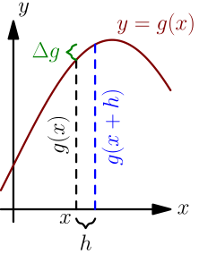

More Derivatives¶
This chapter contains derivative stuff that most people probably find boring, but you might like some of it. It assumes that you have read the first derivative chapter.
Which functions have derivatives?¶
In the first derivative chapter I said that most functions you'll come across have a derivative. Let's be a bit more specific. The derivative doesn't exist in these cases:
-
The function is not continuous; that is, the graph consists of multiple lines. For example, this function is not continuous at $x=0$ and thus $f'(0)$ is not defined:
$$\begin{align}f(x) = \left\{\begin{matrix} 1 \text{ if } x \ge 0 \\ 0 \text{ if } x < 0 \\ \end{matrix}\right.\end{align}$$ -
The graph of the function has a spike in it. Derivatives describe "growing speed" and it isn't clear how fast the values grow on top of a spike. For example, the absolute value $|x|$ has a derivative everywhere except at $x=0$.

Of course, there are more precise definitions about continuity and "spikes", but this should be enough to give you some kind of idea about the limitations.
Chain Rule¶
Let's say you want to find the derivative of $(2x)^2$. The derivative of $x^2$ is just $2x$, so isn't the derivative of $(2x)^2$ then $2(2x)=4x$? No, it's not!
When things are nested like this you need to multiply by the derivative of the inner stuff.
$$\begin{align}\frac{d}{dx}(\underbrace{2x}_{\substack{\text{inner} \\ \text{stuff}}})^2 = 2(2x)\cdot\underbrace{\frac{d}{dx}(2x)}_{\substack{\text{derivative of} \\ \text{inner stuff}}} = 4x\cdot2=8x\end{align}$$If the inner stuff is just $x$, then its derivative is $1$ and multiplying by it does nothing.
This inner stuff derivative thing is known as the chain rule, and it looks like this in a mathy $f$ and $g$ form:
$$\begin{align}\frac{d}{dx}f(g(x)) = f'(g(x))g'(x)\end{align}$$There's a proof below.
Derivative Rules¶
Libraries like sympy are sure handy for finding derivatives, but we can also find the derivative of pretty much anything by hand. In the first derivative chapter we learned to find the derivatives of any constant, $x$ and $x^2$.
We also used a bunch of rules that we didn't prove, and there was a link to even more magic rules on the summary page. This page contains some proofs that hopefully make the rules feel less magic. The proofs are ordered so that they don't use anything that has not been proved before them.
Here $c$ can be any constant, and $f$ and $g$ can be any functions that have derivatives $f'(x)=\frac{d}{dx}f(x)$ and $g'(x)=\frac{d}{dx}g(x)$.
$\frac{d}{dx}(c \cdot f(x)) = c \cdot \frac{d}{dx}(f(x))$¶
Let's plug in $c \cdot f(x)$ to the definition of derivative.
$$\begin{align}\frac{d}{dx}(c \cdot f(x)) &= \lim_{h\to0} \frac{\green c \cdot f(x+h) - \green c \cdot f(x)}{h} \\ &= \lim_{h\to0} \frac{\green c \cdot\bigl(f(x+h)-f(x)\bigr)}{h} \\ &= \lim_{h\to0} \left(\green c \cdot\frac{f(x+h)-f(x)}{h}\right) \\ &= \green c \cdot\lim_{h\to0} \frac{f(x+h)-f(x)}{h} \\ &= c \cdot f'(x)\end{align}$$Here's a nice consequence of this rule:
$$\begin{align}\frac{d}{dx}(-f(x)) &= \frac{d}{dx}((-1)f(x)) \\ &= (-1)f'(x) \\ &= -f'(x)\end{align}$$$\text{A bunch of stuff added and substracted}$¶
We did this in the previous chapter:
$$\begin{align}\frac{d}{dx} (6x^2+7x-123) = \frac{d}{dx}(6x^2) + \frac{d}{dx}(7x) - \frac{d}{dx}(123)\end{align}$$If these things work, then the stuff above is correct:
- $\frac{d}{dx}(f(x)+g(x))=f'(x)+g'(x)$
- $\frac{d}{dx}(f(x)-g(x))=f'(x)-g'(x)$
Let's start by proving the $+$ thing with the definition of derivative. It's kind of messy, but it works. I'll color $f$'s with blue and $g$'s with green so the mess should be a bit less unreadable.
$$\begin{align}\frac{d}{dx}(\blue{f(x)}+\green{g(x)}) &= \lim_{h\to0} \frac{(\blue{f(x+h)}+\green{g(x+h)})-(\blue{f(x)}+\green{g(x)})}{h} \\ &= \lim_{h\to0} \frac{\blue{f(x+h)}+\green{g(x+h)}-\blue{f(x)}-\green{g(x)}}{h} \\ &= \lim_{h\to0} \frac{\blue{f(x+h)}-\blue{f(x)}+\green{g(x+h)}-\green{g(x)}}{h} \\ &= \lim_{h\to0} \frac{\bigl(\blue{f(x+h)}-\blue{f(x)}\bigr)+\bigl(\green{g(x+h)}-\green{g(x)}\bigr)}{h} \\ &= \lim_{h\to0} \left(\frac{\blue{f(x+h)}-\blue{f(x)}}{h}+\frac{\green{g(x+h)}-\green{g(x)}}{h}\right) \\ &= \left(\lim_{h\to0}\frac{\blue{f(x+h)}-\blue{f(x)}}{h}\right)+\left(\lim_{h\to0}\frac{\green{g(x+h)}-\green{g(x)}}{h}\right) \\ &= \blue{f'(x)} + \green{g'(x)}\end{align}$$We can prove the minus thing using stuff that we have proved earlier:
$$\begin{align}\frac{d}{dx}(f(x)-g(x)) &= \frac{d}{dx}\bigl(f(x)+(-g(x))\bigr) \\ &= \frac{d}{dx}f(x)+\frac{d}{dx}(-g(x)) \\ &= f'(x)+(-g'(x)) \\ &= f'(x)-g'(x)\end{align}$$$\frac{d}{dx} f(g(x)) = f'(g(x))g'(x)$¶
Let's first assume that $g(x+h) \ne g(x)$ with a small $h$; that is, $g(x+h)-g(x) \ne 0$ in a $h \to 0$ limit. This means that we can divide stuff by $g(x+h)-g(x)$. We'll do the $g(x+h)=g(x)$ case separately.
Multiplying top and bottom by the green stuff is a nice and clever way to get started with this:
$$\begin{align}\frac{d}{dx} f(g(x)) &= \lim_{h\to0} \frac{f(g(x+h))-f(g(x))}{h} \\ &= \lim_{h\to0} \frac{\bigl(f(g(x+h))-f(g(x))\bigr)\green{\bigl(g(x+h)-g(x)\bigr)}} {h\cdot\green{\bigl(g(x+h)-g(x)\bigr)}} \\ &= \lim_{h\to0} \left(\frac{f(g(x+h))-f(g(x))}{\green{g(x+h)-g(x)}} \cdot \frac{\green{g(x+h)-g(x)}}{h} \right) \\ &= \left(\lim_{h\to0} \frac{f(g(x+h))-f(g(x))}{\green{g(x+h)-g(x)}} \right) \left(\lim_{h\to0} \frac{\green{g(x+h)-g(x)}}{h} \right) \\ &= \left(\lim_{h\to0} \frac{f(g(x+h))-f(g(x))}{\green{g(x+h)-g(x)}} \right) g'(x)\end{align}$$The stuff with green on the bottom looks kind of like something that could be turned into the definition of derivative, but the defintion has just $h$ on the bottom instead of the green mess. Let's define another variable $\Delta g = \green{g(x+h)-g(x)}$. We assumed that the derivative of $g$ exists, so $g$ must be continuous. So if $h \to 0$, then $g(x+h) \to g(x)$ and $\bigl(\green{g(x+h)-g(x)}\bigr) \to 0$.
$$\begin{align}\Delta g &= \green{g(x+h)-g(x)} \\ g(x) + \Delta g &= \blue{g(x+h)}\end{align}$$$$\begin{align}\frac{d}{dx} f(g(x)) &= \left(\lim_{h\to0} \frac{f(\blue{g(x+h)})-f(g(x))}{\green{g(x+h)-g(x)}} \right) g'(x) \\ &= \left(\lim_{\Delta g \to 0} \frac{f(\blue{g(x) + \Delta g})-f(g(x))}{\green{\Delta g}}\right)g'(x) \\ &= f'(g(x))g'(x)\end{align}$$If $g(x+h)=g(x)$ when $h \to 0$, then we can just replace $g(x+h)$ with $g(x)$ everywhere:
$$\begin{align}\frac{d}{dx} f(g(x)) &= \lim_{h\to0} \frac{f(g(x+h))-f(g(x))}{h} \\ &= \lim_{h\to0} \frac{\rcancel{f(g(x))}-\rcancel{f(g(x))}}{h} \\ &= \lim_{h\to0} \frac 0 h \\ &= 0\end{align}$$$$\begin{align}f(g(x))g'(x) &= f(g(x)) \left( \lim_{h \to 0} \frac{g(x+h)-g(x)}{h} \right) \\ &= f(g(x)) \biggl( \lim_{h \to 0} \frac{\rcancel{g(x)}-\rcancel{g(x)}}{h} \biggr) \\ &= f(g(x)) \left( \lim_{h \to 0} \frac{0}{h} \right) \\ &= f(g(x)) \cdot 0 \\ &= 0\end{align}$$$\frac{d}{dx} (f(x)g(x)) = f'(x)g(x) + f(x)g'(x)$¶
Plugging into the definition of derivative gives this:
$$\begin{align}\frac{d}{dx}(f(x)g(x)) = \lim_{h\to0} \frac{f(x+h)g(x+h)-f(x)g(x)}{h}\end{align}$$If the top was slightly different, we could just group it nicely.
$$\begin{align}f(x+h)\green{g(x+h)}-f(x)\green{g(x+h)} = \bigl(f(x+h)-f(x)\bigr)\green{g(x+h)}\end{align}$$We have $-f(x)g(x)$ instead of $-f(x)g(x+h)$, but we can just put a $-f(x)g(x+h)$ there if we also add $+f(x)g(x+h)$ to cancel it out. The blue parts add up to $0$:
$$\begin{align}\frac{d}{dx} (f(x)g(x)) &= \lim_{h\to0} \frac{\green{f(x+h)g(x+h)-f(x)g(x)}}{h} \\ &= \lim_{h\to0} \frac{ \\ \overbrace{\green{f(x+h)g(x+h)}\blue{-f(x)g(x+h)}}^{\text{we can group }g(x+h)} \blue{+}\overbrace{\blue{f(x)g(x+h)}\green{-f(x)g(x)}}^{\text{we can group }f(x)}}{h} \\ &= \lim_{h\to0} \frac{\bigl(\green{f(x+h)}\blue{-f(x)}\bigr)g(x+h) + f(x)\bigl(\blue{g(x+h)}\green{-g(x)}\bigr)}{h} \\ &= \lim_{h\to0} \left(\frac{\bigl(\green{f(x+h)}\blue{-f(x)}\bigr)g(x+h)}{h} + \frac{f(x)\bigl(\blue{g(x+h)}\green{-g(x)}\bigr)}{h}\right) \\ &= \left(\lim_{h\to0} \frac{\green{f(x+h)}\blue{-f(x)}}{h}\right) \left(\lim_{h\to0}g(x+h)\right) + f(x)\left(\lim_{h\to0}\frac{\blue{g(x+h)}\green{-g(x)}}{h}\right) \\ &= f'(x)g(x) + f(x)g'(x)\end{align}$$$\frac{d}{dx} x^c = c\ x^{c-1}$¶
It's easy to prove that this works for an individual $c$ value. For example, our very first derivative example shows that $\frac{d}{dx} x^2 = 2x$, and $2x^{2-1}$ is also $2x$. Here I'll prove that this works with all positive integers using a powerful technique known as induction.
Let's start by showing that this works with $c=1$:
$$\begin{align}\frac{d}{dx} x^1 = \frac{d}{dx} x = 1 = 1x^0 = 1x^{1-1}\end{align}$$Next we'll prove that if the rule works at $c=k$ then it also works at $c=k+1$ where $k$ is a positive integer. Let's write things down just to be clear:
We assume: $\frac{d}{dx} x^k = k x^{k-1}$
We'll prove: $\frac{d}{dx} x^{k+1} = (k+1)x^{(k+1)-1}$
Let's use the $\frac{d}{dx}(f(x)g(x))$ and $\frac{d}{dx} x$ rules we proved above and the assumption.
$$\begin{align}\frac{d}{dx} x^{k+1} &= \frac{d}{dx} (x^k x^1) \\ &= \frac{d}{dx} (\green{x} \cdot \blue{x^k}) \\ &= \left(\frac{d}{dx} \green{x}\right) \cdot \blue{x^k} + \green{x} \cdot \left(\frac{d}{dx} \blue{x^k}\right) \\ &= 1x^k + x \cdot k x^{k-1} \\ &= 1x^k + k\cdot x^{k-1}x^1 \\ &= 1\green{x^k} + k\green{x}^{\green{k}\rcancel{-1}\rcancel{+1}} \\ &= (1+k)\green{x^k} \\ &= (k+1)x^{(k+1)-1}\end{align}$$We proved that if $\frac{d}{dx} x^k = k x^{k-1}$ then $\frac{d}{dx} x^{k+1} = (k+1)x^{(k+1)-1}$. Now we know that the rule works when $c=1$, and then if we plug in $k=1$ we know it works when $c=2$, and so on.
Note that we only proved that the rule works when $c$ is a positive integer, but it also works when $c$ is e.g. $\frac{1}{2}$. This tutorial also contains another proof that doesn't have this restriction.
Handy thing: $a^2-b^2=(a-b)(a+b)$
Proof using $(a+b)c=ac+bc$ and $(a-b)c=ac-bc$:
$$\begin{align}& \ (a-b)(a+b) \\ =&\ a(a+b)-b(a+b) \\ =&\ (aa+ab)-(ba+bb) \\ =&\ aa\rcancel{+ab}\rcancel{-ab}-bb \\ =&\ a^2 - b^2\end{align}$$In this case we need to plug in $a=\sqrt{x+h}$ and $b=\sqrt x$.
$\frac{d}{dx} \sqrt x = \displaystyle \frac{1}{2\ \sqrt x}$¶
We could prove this with the $\frac{d}{dx} x^c$ rule because $\sqrt x = x^\frac{1}{2}$, but we proved the $x^c$ rule only for positive integers. Let's survive without it.
$$\begin{align}\frac{d}{dx} \sqrt x &= \lim_{h\to0} \frac{\sqrt{x+h}-\sqrt x}{h} \\ &= \lim_{h\to0} \frac{ \bigl(\sqrt{x+h}-\sqrt x\ \bigr)\green{\bigl(\sqrt{x+h}+\sqrt x\ \bigr)}}{ h \cdot \green{\bigl(\sqrt{x+h} + \sqrt x\ \bigr)}} \\ &= \lim_{h\to0} \frac{\bigl(\sqrt{x+h}\ \bigr)^2-\bigl(\sqrt x\ \bigr)^2}{ h \cdot \bigl(\sqrt{x+h} + \sqrt x\ \bigr)} \\ &= \lim_{h\to0} \frac{(\rcancel x+h)\rcancel{-x}}{h\cdot\bigl(\sqrt{x+h} + \sqrt x\ \bigr)} \\ &= \lim_{h\to0} \frac{\rcancel h}{\rcancel h\cdot\bigl(\sqrt{x+h} + \sqrt x\ \bigr)} \\ &= \lim_{h\to0} \frac{1}{\sqrt{x+h} + \sqrt x} \\ &= \frac{1}{\sqrt x + \sqrt x} \\ &= \frac{1}{2\ \sqrt x}\end{align}$$You're probably wondering how the heck I knew that multiplying top and bottom by the green stuff would result in something useful, but this is actually a well-known trick with square roots and limits.
$\frac{d}{dx}(1/x) = \displaystyle \frac{-1}{x^2}$¶
We could use the $\frac{d}{dx} x^c$ rule again because $1/x$ is actually $x^{-1}$, but as before, we haven't proved that it works at $c=-1$ so we'll do this without it. Adding the green and blue stuff means that the bottoms are the same and we can combine stuff together.
$$\begin{align}\frac{d}{dx} (1/x) &= \lim_{h\to0} \frac{\frac{1}{x+h} - \frac 1 x}{h} \\ &= \lim_{h\to0} \frac{\frac{\green x}{(x+h)\green x} - \frac{\blue{x+h}}{\blue{(x+h)}x}}{h} \\ &= \lim_{h\to0} \frac{\left(\frac{x-(x+h)}{(x+h)x}\right)}{h} \\ &= \lim_{h\to0} \frac{x-(x+h)}{(x+h)xh} \\ &= \lim_{h\to0} \frac{\rcancel{x-x}-h}{(x+h)xh} \\ &= \lim_{h\to0} \frac{-\rcancel h}{(x+h)x\rcancel h} \\ &= \lim_{h\to0} \frac{-1}{(x+h)x} \\ &= \frac{-1}{x^2}\end{align}$$The $-1$ is kind of surprising, but as you can see, it comes from the $-\frac 1 x$ on the top.
$\frac{d}{dx} \displaystyle \left(\frac{f(x)}{g(x)}\right) = \frac{f'(x)g(x) - f(x)g'(x)}{(g(x))^2}$¶
We need these rules that are proved above:
- $\frac{d}{dx} (f(x)g(x)) = f'(x)g(x) + f(x)g'(x)$
- $\frac{d}{dx} (1/x) = \displaystyle \frac{-1}{x^2}$
- $\frac{d}{dx} f(\underbrace{g(x)}_{\substack{\text{inner} \\ \text{stuff}}}) = f'(g(x))g'(x)$
Now this is quite straight-forward.
$$\begin{align}\frac{d}{dx} \left( \frac{f(x)}{g(x)} \right) &= \frac{d}{dx} \left( \green{f(x)} \blue{\frac{1}{g(x)}} \right) \\ &= \green{f}'\green{(x)}\blue{\frac{1}{g(x)}} + \green{f(x)}\biggl(\frac{d}{dx}\Bigl( \green{\frac{1}{\underbrace{g(x)}_{\substack{\text{inner} \\ \text{stuff}}}}}\Bigr)\biggr) \\ &= \frac{f'(x)}{g(x)} + f(x) \left( \frac{-1}{(g(x))^2} g'(x) \right) \\ &= \frac{f'(x)g(x)}{g(x)g(x)} - \frac{f(x)g'(x)}{(g(x))^2} \\ &= \frac{f'(x)g(x) - f(x)g'(x)}{(g(x))^2}\end{align}$$